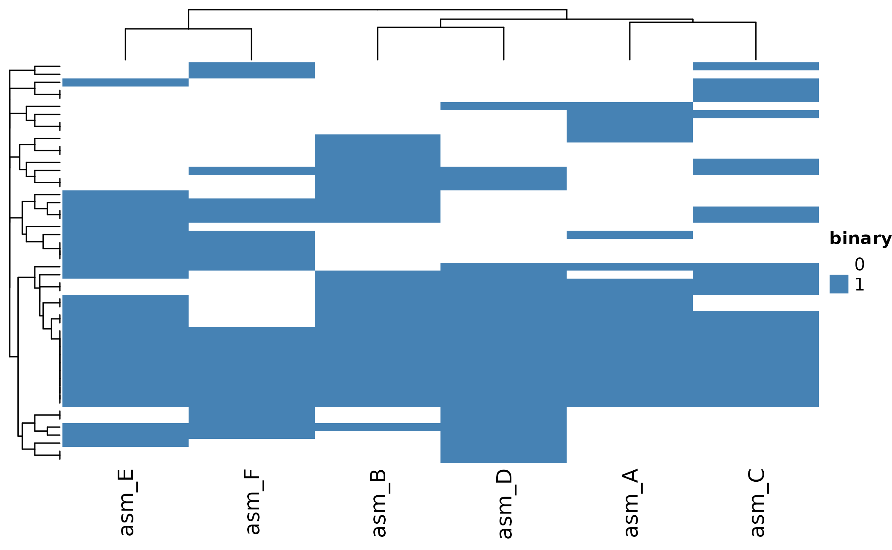
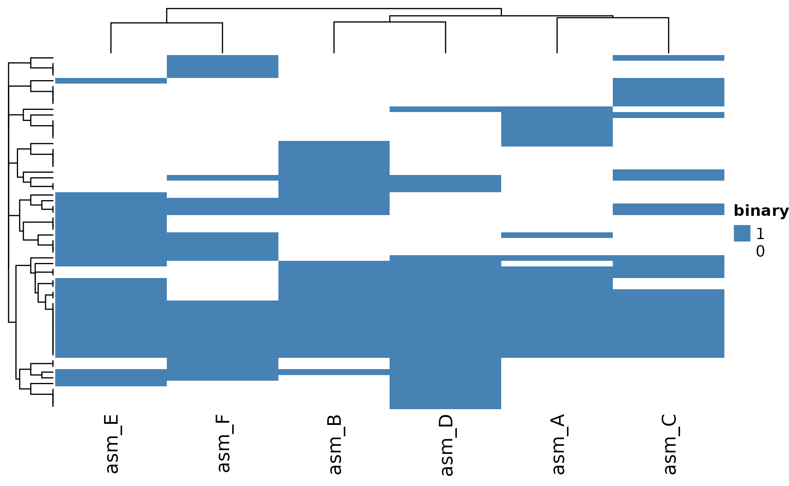
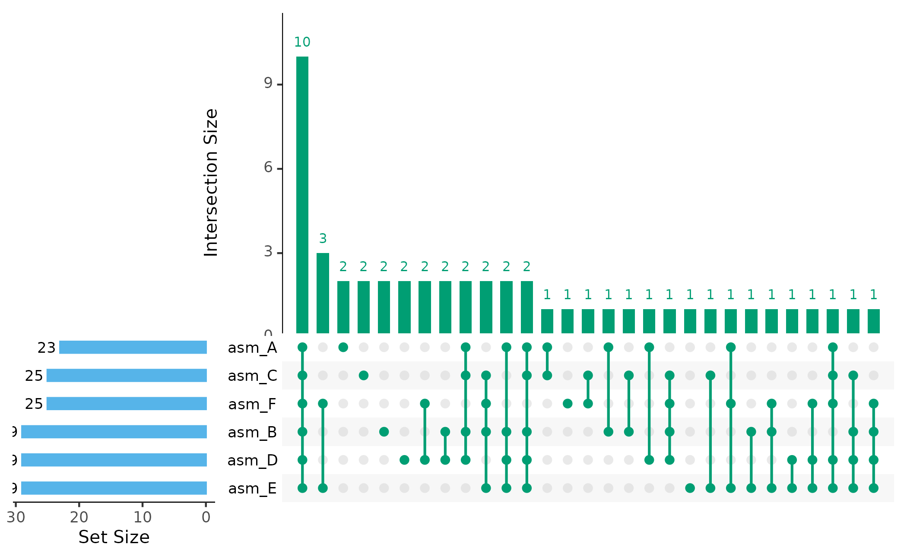
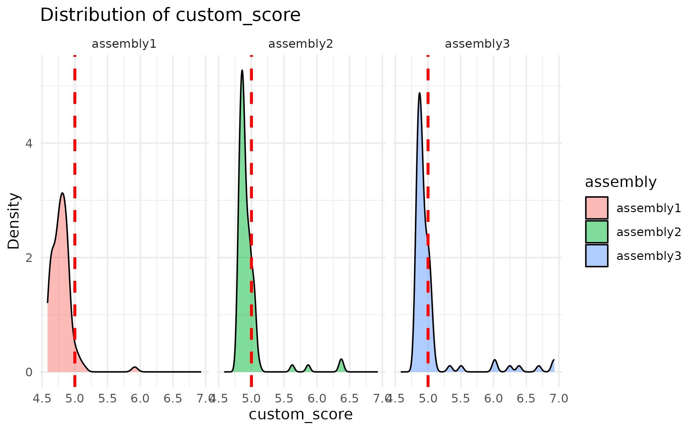

Introduction
paneffectR helps you compare proteins across multiple genome assemblies. The typical workflow is: 1. Load protein sequences from FASTA files 2. Cluster proteins into orthogroups (groups of equivalent proteins) 3. Build a presence/absence matrix 4. Visualize the results
This vignette walks through each step using example data included with the package.
Step 1: Load Protein Data
The main entry point is load_proteins(), which discovers
and loads all FASTA files from a directory:
# Get path to test data included with the package
testdata_dir <- system.file("testdata", package = "paneffectR")
# Load all assemblies (FASTAs and scores)
proteins <- load_proteins(
fasta_dir = testdata_dir,
score_dir = testdata_dir,
pattern = "*.faa"
)
proteins
#> -- protein_collection --
#> 3 assemblies, 300 total proteins
#>
#> # A tibble: 3 × 3
#> assembly_name n_proteins has_scores
#> <chr> <int> <lgl>
#> 1 assembly1 100 TRUE
#> 2 assembly2 100 TRUE
#> 3 assembly3 100 TRUEThe result is a protein_collection containing all
assemblies. You can see:
- How many assemblies were loaded
- How many proteins in each
- Whether effector scores are present
Exploring the Data
Each assembly is stored as a protein_set. Access
individual assemblies by name:
# Access one assembly
ps <- proteins$assemblies[["assembly1"]]
ps
#> -- protein_set: assembly1 --
#> 100 proteins
#> Scores: present
# The proteins are stored as a tibble
head(ps$proteins[, c("protein_id", "sequence", "custom_score", "score_rank")])
#> # A tibble: 6 × 4
#> protein_id sequence custom_score score_rank
#> <chr> <chr> <dbl> <int>
#> 1 assembly1_000039 MPFVLNLLVLVAVWYGLVRMAMLLKDDSEIKSFDPF… 4.62 93
#> 2 assembly1_000040 MEVAECTHKLASTTFVKTVEAPALAIMEPLLKRALA… 4.75 64
#> 3 assembly1_000094 MTDKDKPKDDDDCYVKVNTPGGVGDTNSPNKGGLPF… 4.86 27
#> 4 assembly1_000122 MGSSPIFRPFKCKFSMFSKSILIFLLILPLISVILL… 4.81 44
#> 5 assembly1_000164 MLFCVMVGTGCQLLGMALVTLFFAAVGVLAPSNRGK… 4.78 54
#> 6 assembly1_000194 MMGNLAKDIVNGHREKTLALLWKLISCFQLQALVDA… 4.76 59Step 2: Cluster Proteins
Now we group proteins from different assemblies into orthogroups - sets of proteins that are likely the same gene/function across assemblies.
# Cluster using DIAMOND reciprocal best hits
clusters <- cluster_proteins(proteins, method = "diamond_rbh")
clustersNote: Clustering requires DIAMOND to be installed. If you don’t have DIAMOND, you can skip this step and use the pre-computed clusters included with the package for the visualization examples.
For this vignette, we’ll load pre-computed results:
# Load pre-computed visual test data
visual_dir <- system.file("testdata", "visual", package = "paneffectR")
clusters <- readRDS(file.path(visual_dir, "clusters_visual.rds"))
clusters
#> -- orthogroup_result (synthetic_visual) --
#> 50 orthogroupsUnderstanding Orthogroups
An orthogroup result contains:
- orthogroups: Which proteins belong to which group
- singletons: Proteins not assigned to any group (unique to one assembly)
- stats: Summary statistics
# See the orthogroup assignments
head(clusters$orthogroups)
#> # A tibble: 6 × 3
#> orthogroup_id assembly protein_id
#> <chr> <chr> <chr>
#> 1 OG_core_01 asm_A asm_A_p001
#> 2 OG_core_01 asm_B asm_B_p002
#> 3 OG_core_01 asm_C asm_C_p003
#> 4 OG_core_01 asm_D asm_D_p004
#> 5 OG_core_01 asm_E asm_E_p005
#> 6 OG_core_01 asm_F asm_F_p006
# How many singletons?
n_singletons(clusters)
#> [1] 0
# Singletons by assembly
singletons_by_assembly(clusters)
#> # A tibble: 0 × 2
#> # ℹ 2 variables: assembly <chr>, n_singletons <int>Step 3: Build Presence/Absence Matrix
Convert the orthogroups into a matrix where:
- Rows = orthogroups
- Columns = assemblies
- Values = presence (1) or absence (0)
# Build binary presence/absence matrix
pa <- build_pa_matrix(clusters, type = "binary")
pa
#> -- pa_matrix (binary) --
#> 50 orthogroups x 6 assemblies
#> Sparsity: 46.7%
# View the raw matrix
pa$matrix[1:10, ]
#> asm_A asm_B asm_C asm_D asm_E asm_F
#> OG_acc_01 1 0 0 0 1 1
#> OG_acc_02 1 1 0 1 1 0
#> OG_acc_03 1 1 1 1 1 0
#> OG_acc_04 1 1 1 1 0 0
#> OG_acc_05 1 0 1 1 1 1
#> OG_acc_06 1 1 1 1 0 0
#> OG_acc_07 0 1 1 0 1 1
#> OG_acc_08 0 1 0 1 1 1
#> OG_acc_09 0 0 0 1 1 1
#> OG_acc_10 0 1 1 1 1 0Including Singletons
By default, singletons (proteins unique to one assembly) are included as their own orthogroups:
# Without singletons
pa_no_single <- build_pa_matrix(clusters, type = "binary", exclude_singletons = TRUE)
# Compare dimensions
cat("With singletons:", nrow(pa$matrix), "orthogroups\n")
#> With singletons: 50 orthogroups
cat("Without singletons:", nrow(pa_no_single$matrix), "orthogroups\n")
#> Without singletons: 50 orthogroupsStep 4: Visualize
Heatmap
The heatmap shows presence/absence patterns across all assemblies:
ht <- plot_heatmap(pa)
ComplexHeatmap::draw(ht)
Customize with clustering and colors:
ht <- plot_heatmap(
pa,
cluster_rows = TRUE,
cluster_cols = TRUE,
distance_method = "jaccard",
color = c("white", "steelblue")
)
ComplexHeatmap::draw(ht)
UpSet Plot
UpSet plots show which orthogroups are shared between assemblies:
# Show intersections with at least 2 orthogroups
plot_upset(pa, min_size = 1)
#> Warning: `aes_string()` was deprecated in ggplot2 3.0.0.
#> ℹ Please use tidy evaluation idioms with `aes()`.
#> ℹ See also `vignette("ggplot2-in-packages")` for more information.
#> ℹ The deprecated feature was likely used in the UpSetR package.
#> Please report the issue to the authors.
#> This warning is displayed once per session.
#> Call `lifecycle::last_lifecycle_warnings()` to see where this warning was
#> generated.
#> Warning: Using `size` aesthetic for lines was deprecated in ggplot2 3.4.0.
#> ℹ Please use `linewidth` instead.
#> ℹ The deprecated feature was likely used in the UpSetR package.
#> Please report the issue to the authors.
#> This warning is displayed once per session.
#> Call `lifecycle::last_lifecycle_warnings()` to see where this warning was
#> generated.
#> Warning: The `size` argument of `element_line()` is deprecated as of ggplot2 3.4.0.
#> ℹ Please use the `linewidth` argument instead.
#> ℹ The deprecated feature was likely used in the UpSetR package.
#> Please report the issue to the authors.
#> This warning is displayed once per session.
#> Call `lifecycle::last_lifecycle_warnings()` to see where this warning was
#> generated.
Assembly Dendrogram
Cluster assemblies by their shared orthogroup content:
plot_dendro(pa, distance_method = "jaccard")
Working with Scores
If your data includes effector prediction scores (from omnieff), you can:
Filter by Score
Only include high-confidence effector predictions:
# Build matrix with score threshold
pa_filtered <- build_pa_matrix(
clusters,
type = "binary",
score_threshold = 5.0, # Only include proteins with score >= 5
proteins = proteins # Need proteins to access scores
)Visualize Score Distributions
# Score distributions across all assemblies
plot_scores(proteins)
# Faceted by assembly with threshold line
plot_scores(proteins, by_assembly = TRUE, threshold = 5.0)
Summary
The core paneffectR workflow:
-
load_proteins()- Load FASTA files (and optional scores) -
cluster_proteins()- Group proteins into orthogroups -
build_pa_matrix()- Create presence/absence matrix -
plot_*()- Visualize results
Next Steps
- Effector Analysis - Working with omnieff output and score filtering
- Pan-Genome Analysis - Analyzing core vs accessory proteins
- Algorithm Deep Dive - Technical details on clustering methods